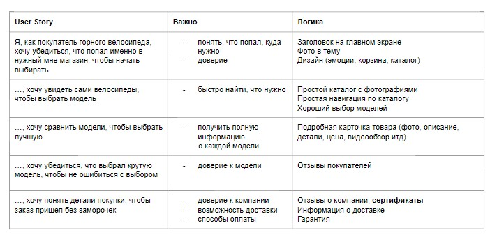

Мой Справочник | WEB-DESIGN | Сбор данных
Бриф - хороший способ понять и решить проблему заказчика. По сути это анкета, в которой заказчик отвечает на ваши вопросы.
Разговор с заказчиком - метод шести вопросов:
Личная-встреча, онлайн-собеседование, переписка
- Что? Кто? (клиенты, продукт, ...)
- Сколько? (лет, цена, мест, ...)
- Где?
- Когда?
- Зачем? (именно к вам)
- Как? (процессы, фукционал, самый важный вопрос)
Привлечение клиентов
- Можно что-нибудь подарить
- Конкретика о происхождении продукта, сертификация продукта
- Приладывайте доказательства (отзывы, мнения, статьи)
- Избегать потерь вместо рекламы приобретений ???
- Подгоняйте пользователя, но честно (осталось товаров, до конца акции...)
- Дефицит вместо изобилия. Когда чего-либо мало, мы ценим это больше (количество билетов на вебинар, количество
клиентов,
которых можно обслужить за месяц, количество продуктов, которые можно произвести
за определённый промежуток времени.
- Благодарность вместо констатации факта (можно оставить ссылки для обратной связи после покупки товара)
- Выделить свою аудиторию
User Story (коридорные тексты) & User Logic
